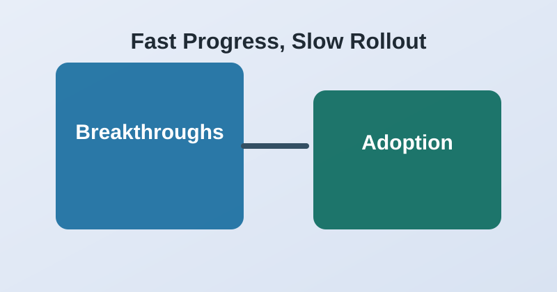
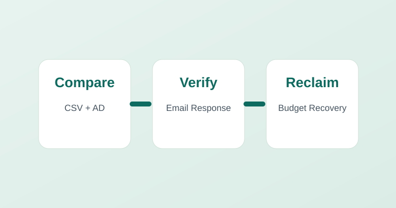
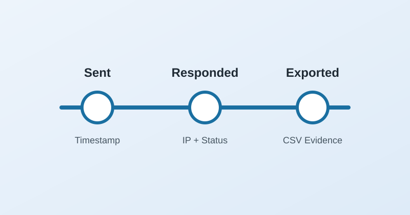

NyLi Assets
Software license intelligence to identify orphaned seats, verify access needs, and reclaim budget before renewal cycles.
Built for IT, procurement, operations, and analytics leaders
NyLi Assets is the fastest way to compare license data against active directory records, verify ownership with end users, and reclaim unused spend with evidence your stakeholders can trust. Add NyLi Agent and NyLi Insights to automate follow-through and reporting across the full operating cycle.
Software license intelligence to identify orphaned seats, verify access needs, and reclaim budget before renewal cycles.
Automate repetitive operational workflows across service desk, email, and collaboration tools.
Turn CSV, Excel, or JSON into interactive dashboards with plain English prompts, reusable workflows, and enterprise-ready controls.
Use NyLi Assets to find mismatched and inactive software assignments across your company data.
Run confirmation workflows, classify responses, and move clear reclaim decisions forward.
Expand with NyLi Agent and NyLi Insights to automate follow-through and provide leadership reporting.
Latest practical posts from our Insights area for teams managing license spend, audit trails, and AI-assisted operations.

Most Recent
Why the gap between technical progress and practical enterprise implementation is still holding adoption back.

A practical framework for running recurring reclaim cycles with clear ownership, faster response handling, and measurable savings.

How to structure timestamped records, IP evidence, and exports so internal and external reviewers can validate actions quickly.
Whether your priority is license reclaim, workflow automation, or AI analytics, we can map the right rollout path across NyLi Assets, NyLi Agent, and NyLi Insights.
Request a Product Suite Walkthrough